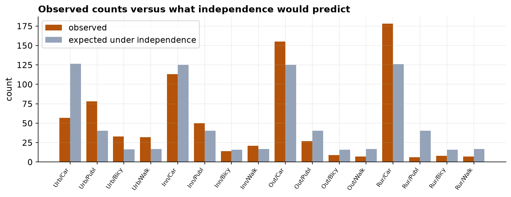
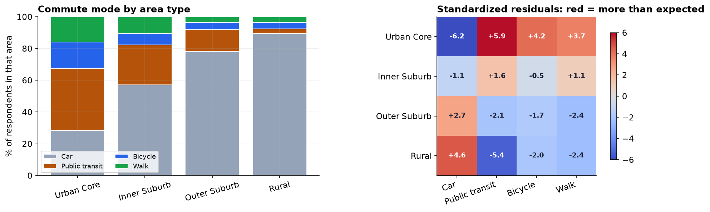

Every capstone so far had a number to average. This one has only labels: which area someone lives in, and how they get to work. You cannot take the mean of "bicycle". When both variables are categories, the data become a table of counts, and the question becomes whether the two classifications are related.
- Setting
- A regional transport authority surveyed residents on how they travel to work or study, drawing 200 residents at random from each of four area types.
- The question
- Does a person's main commuting mode depend on the kind of area they live in?
- Why it matters
- Transit investment is allocated by area. If mode and area are independent, one plan serves everywhere; if they are not, each area type needs its own.
- What we do
- Read the questionnaire first to see which items can carry a test at all, build the contingency table, check the expected-count condition, run the chi-square test of independence, and report Cramer's V beside it.
Area type and commute mode are strongly related: χ²(9) = 189.7, p < 0.001, with Cramer's V = 0.28 (a moderate association). Public transit falls from 39% in the Urban Core to 3% in Rural areas while car use climbs from 28% to 89%. But the sampling design carries a warning that changes how the numbers may be quoted.
Where the Data Came From
A regional transport authority surveyed residents about how they travel to work or study. Before touching a single count, read the instrument, because the questions determine what kinds of analysis are even possible.
Four different measurement types appear here on purpose, and each would demand a different analysis. Only the two nominal items feed this chapter's test. The Likert item would call for the rank methods of Capstone 12; age would call for the methods of the earlier capstones; and the open text is not a statistical variable at all until someone codes it.
The sampling plan matters just as much. This was a stratified random sample: the population was split into four strata by area type, and 200 residents were drawn at random from each.
Clean It, Then Build the Table
The area labels arrived inconsistently cased, so they were standardized first; then duplicate rows and responses missing either of the two test variables were removed, taking 802 rows to 795. A respondent who did not answer both questions cannot appear in a cross-tabulation.
| Area type | Car | Public transit | Bicycle | Walk |
|---|---|---|---|---|
| Urban Core | 57 (28.5%) | 78 (39.0%) | 33 (16.5%) | 32 (16.0%) |
| Inner Suburb | 113 (57.1%) | 50 (25.3%) | 14 (7.1%) | 21 (10.6%) |
| Outer Suburb | 155 (78.3%) | 27 (13.6%) | 9 (4.5%) | 7 (3.5%) |
| Rural | 178 (89.4%) | 6 (3.0%) | 8 (4.0%) | 7 (3.5%) |
Read the percentages down each column. If mode and area were independent, these four rows would look alike. Instead public transit falls steadily from 39% to 3% while car use climbs from 28% to 89%, an orderly gradient tracking density.
Expected Counts, and the Assumption
The test works by comparing what we observed against what the table would look like if the two variables were independent. Those expected counts come from the row and column totals alone: if every area split across modes in the same overall proportions, this is the table you would see.

The chi-square approximation needs every expected count to be about 5 or more. Here the smallest is 15.94, comfortably clear, so the test is trustworthy. Had a cell fallen below that, the fix would be Fisher's exact test or collapsing sparse categories. Note the condition is on the expected counts, not the observed ones: the Rural-transit cell has only 6 observed, which is fine.
The Test, the Effect Size, and Where It Lives
The p-value settles that the variables are not independent, but with 795 respondents almost any pattern would have been significant. Cramer's V is the number that says whether the association is worth acting on: it rescales chi-square onto a 0-to-1 range, and 0.28 is a moderate association, substantial for survey data on human behavior.
A significant chi-square says only that the table departs from independence somewhere. To find out where, we use standardized residuals, the chi-square equivalent of a post-hoc test. Each is roughly a z-score for one cell, and anything beyond about ±2 is notable.
| Cell | Observed | Expected | Standardized residual | Reading |
|---|---|---|---|---|
| Rural × Car | 178 | 125.9 | +4.6 | far more than independence predicts |
| Urban Core × Public transit | 78 | 40.5 | +5.9 | far more than expected |
| Urban Core × Car | 57 | 126.5 | −6.2 | far fewer than expected |
| Rural × Public transit | 6 | 40.3 | −5.4 | far fewer than expected |

The Verdict, and the Sampling Trap
Area type and commute mode are clearly and moderately associated, in an orderly gradient from car-dependent rural areas to transit-using urban ones. For a transport authority the practical implication is direct: a single region-wide strategy would fit none of these areas well.
Each area contributed exactly 200 respondents by design, so this dataset says nothing about how many people live in each area. Computing a region-wide figure from it, "X% of residents take public transit", would be wrong unless the strata are first weighted by population. Comparing areas is exactly what the design supports; pooling them is exactly what it does not.
- Association is not explanation. Rural residents drive more, but this survey cannot separate choice from availability. If there is no bus, the mode is not a preference, it is a constraint. The result motivates asking why, not concluding that rural residents like cars.
- Self-report and non-response. People described their own behavior on a voluntary online questionnaire. Non-response is rarely random, and those most frustrated with their commute may be over-represented.
- The categories shape the finding. "Main way of getting to work" forces one answer from people who mix modes, and the four area labels are administrative conveniences. Both choices were made before any analysis, and both bound what the test can discover.
Chi-Square in Data Science & AI
Tables of counts are everywhere in applied work, and this test is the standard tool for them.
| Where it appears | The two categorical variables |
|---|---|
| A/B tests on categorical outcomes | Variant assigned × outcome category (converted, bounced, browsed). |
| Feature screening | A categorical feature × a categorical target, before modeling. |
| Randomization checks | Treatment arm × a baseline category, to confirm allocation looks random. |
| Fairness auditing | Group membership × model decision, the same table used in Chapter 158. |
At data-science scale the chi-square p-value stops being informative: with a million rows every table is significant. The disciplined habit is to report Cramer's V (or a lift or odds ratio) alongside it, and to inspect the residuals rather than the single omnibus number. Watch the expected counts too, since rare categories break the approximation long before the sample looks small.
Estimate, and Look for the Third Variable
Chi-square said region and commute mode are related and Cramer's V put the strength at 0.28. Both are point estimates from 795 respondents, so both deserve intervals, and so do the percentages that will end up in a transport plan.
| Region | Public transit share | 95% CI (Wilson) | n |
|---|---|---|---|
| Urban Core | 39.0% | 32.5% to 45.9% | 200 |
| Inner Suburb | 25.3% | 19.7% to 31.7% | 198 |
| Outer Suburb | 13.6% | 9.5% to 19.1% | 198 |
| Rural | 3.0% | 1.4% to 6.4% | 199 |
| Cramer's V | 0.282 | 0.253 to 0.320 (bootstrap) | 795 |
"Moderate" is a fair description of a V between 0.25 and 0.32, and the data will not support calling it strong. More usefully, the headline percentages now carry margins: transit use in the Urban Core is around 39 percent give or take 7 points, and a plan built on 39 percent as a fixed figure is building on a number the survey cannot pin down that tightly. These intervals describe the sampled strata; because allocation was equal rather than proportional, they are not estimates for the city's population.
The questionnaire also captured a 7-point commute satisfaction rating. Cyclists report the highest mean satisfaction, 4.16 against 3.79 for walkers, and it would be easy to write that up as "cycling makes for happier commutes". The test says otherwise (H = 1.22, p = 0.75): with 64 cyclists that ordering is well within chance. Even had it reached significance the causal reading would not follow, because people who live close enough to cycle have short commutes, and short commutes are pleasant whatever the mode.
The full project, step by step
The companion notebook runs all twelve framework steps: it prints the questionnaire and sampling plan from the
workbook, standardizes the messy area labels and cleans the file with a printed audit trail, builds the
contingency table and its row percentages, computes the expected counts and checks the minimum, runs the
chi-square test with scipy, computes Cramer's V, and maps the standardized residuals to locate the
association. Every number here comes from its output, with a plain-language note after each result.
The dataset (capstone-commute-mode-by-region.xlsx) holds the
responses on the responses sheet plus the full Questionnaire and Sampling sheets, and it
keeps the inconsistent labels, blanks, and duplicates so you can practice the cleaning. Two written reports
accompany it: a plain-language brief for a transport planner, and a technical report
with the contingency analysis, residuals, and references.
🎓 Key Takeaways
- ✓Two categorical variables become a contingency table, and the chi-square test of independence asks whether they are related.
- ✓Check the expected counts, not the observed ones: all must be about 5 or more (smallest here was 15.9), or switch to Fisher's exact test.
- ✓Report an effect size: χ²(9) = 189.7 with p < 0.001 only says "not independent"; Cramer's V = 0.28 says the association is moderate.
- ✓Standardized residuals locate the effect: it lives in the car and transit cells at the density extremes, not in cycling or walking.
- ✓The sampling design bounds the claim: equal allocation across strata makes area comparisons fair but makes any pooled region-wide percentage invalid without weighting.
Quiz: Test Yourself
Eight questions on this capstone, from expected counts to the sampling trap. Answer them, hit Check Answers, and keep refining until you score 100%. Your progress is saved.